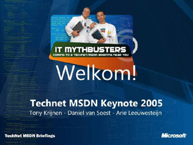
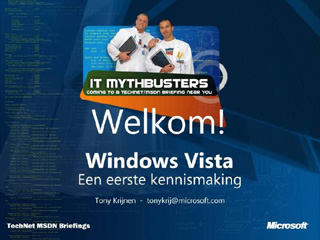
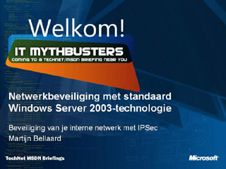
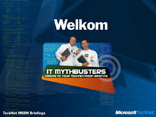

TechNet MSDN Keynote 2005

Speaker(s): Tony Krijnen, Daniel van Soest, Arie leeuwesteijn
Windows Vista: Een Eerste Kennismaking

Speaker(s): Tony Krijnen
SQL Server 2005 Business Intelligence
Speaker(s): Frank Snoek
Exchange SP2 en Mobility
Speaker(s): Stevenvan Houttum
Netwerkbeveiliging met Standaard: Windows Server 2003 technologie

Speaker(s): Martijn Bellaard
Tips & Tricks beveiliging Windows met Least Privilege

Speaker(s): Daniel van Soest
Small Business Server 2003
Speaker(s): Hugo Leijtens